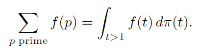
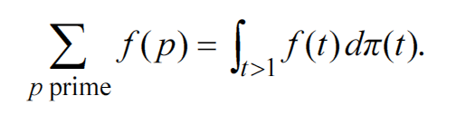
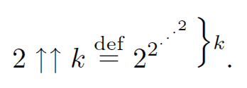
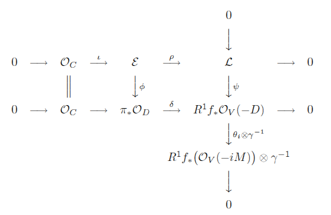
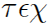
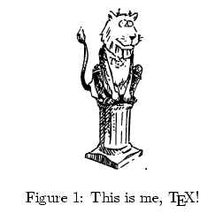
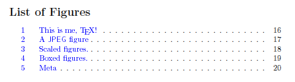
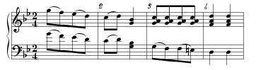
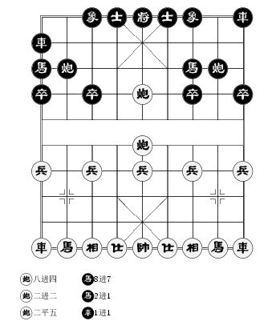

这是一个介绍 TeX — 一个漂亮，有趣又可靠的排版程序的 网页。希望通过我的介绍，你能体会到使用 TeX 的快乐感觉。
这页分成了很多小主题，可以叫做一个非技术性的 FAQ. 里面藏 着我收集的很多有趣的有关 TeX 的言论，你可以挑你喜欢的看。（题外话）
TeX 是一个排版系统。用 TeX，你可以把你的文章做成书那种效 果。你可以把它打印出来，或者送到出版社投稿。TeX 非常适合用来 写学术论文和书籍。
Word 和 WordPerfect 是“字处理程序”(word processor)，它 们是“所见即所得(WYSIWYG)”的，你直接修改字体，颜色，用鼠标 画出表格…… 马上就可以看到效果。屏幕上显示出来是什么效果， 印出来基本上就是那个效果。而 TeX 不是，你输入的都是文本文件， 需要一个程序(当然就是tex了)处理之后才能得到一个排版后的结果。
Word 这样所见即所得的程序写科技论文是很累的。这会使你的脑 子总是想着专业排版人员考虑的问题，比如 “这个单词使用什 么字体呢？”，“这行应该缩进多少呢？” 这样就没有什么时 间用来思考语言和内容了。所以 TeX 被设计为“WYTIWYG （所 想即所得）”。
用TeX写文章，他想的是 “这一段是否应该属于上一节呢？”， “这句话跟我这章的主题符合吗？”，“是否应该开始新的一章 呢？”，“这个概念读者是否容易理解呢？”…… 你告诉 TeX 的 是：“这是一章开始”，“这个单词应该强调”， “这里是一段 诗”……就像在对他的秘书口授机宜。而不是告诉她：“这是第3章， 应该用黑体三号字，开头有一个‘双S'，……”，“这个单词用斜 体楷体小四”， “左右缩进各一英寸，右边不要对齐，换用小一号 花体”……这些是秘书的事情，不用你操心。
TeX 就是你优雅而聪明的秘书。你写论文的时候，能专注于逻辑 思维。她排出的数学公式是无与伦比的漂亮，所以数学家最喜欢这个 东西。
你比较一下 Word 和 LaTeX 生成的的PDF文档就可以发现：
看看 TeX 输入的公式：

再用 Word 输入同样的公式：
上面这个公式是一位很熟悉 Word 的数学系的朋友耐着性子仔仔细细帮我用 MS Equation 3.0 输入了，然后转成 PDF 后的效果，他说：“还好，凑合能认出来是什么。”
TeX 输入的数学公式都是文本。你可以直接用键盘敲入。比如这个漂亮的公式是这样打出来的：
$$\sum_{p\rm\;prime}f(p) = \int_{t>1}f(t)d\pi(t).$$
\sum 就是那个求和符号, "_"后面括起来的就是下标，\rm 使后 面的 "prime" 用正体显示, \; 是一个空格。\int 就是积分 (integrate)符号, \pi 就是那个圆周率符号。很难吗？麻烦吗？好吧，试试用 Word 的公式编辑器怎样打出这个公式，再比较一下效果。
其实有很多符号你在 Word 里就不容易找到了。比如：

用 TeX 就这样输入：
$$2\uparrow\uparrow k
\mathrel{\mathop=^{\rm def}}
2^{2^{\cdot^{\cdot^{\cdot^2}}}}
\vbox{\hbox{$\Big\}\scriptstyle k$}\kern0pt}.$$
虽然比一般的公式复杂一点，但是你发现里面的简单的对应关系没有？\uparrow 就是向上的箭头，\mathrel可以构造那个组合的等号，\cdot 就是那些点，我们不断提升上标，最后那个后花括号稍微复杂一些。
你在一下午就可以学到不止这种程度。其实一下午你就可以学会 输入世界上最复杂的公式。比如像下面这个……我也不知道这是什么就打进去了。感觉好像是个兔子洞的路线图？谁知道这是什么告诉我一声。

知之者不如好之者，好之者不如乐之者。
科学和艺术是不可分割的。科学家都知道艺术和美感给他
们带来了什么。看到均称的排版，优雅的字体，漂亮的公式，是
非常有助于抽象思维的。厌恶数学的学生往往是因为看了太多丑
陋的数学书籍。
其实 TeX 的宏比Word强大很多。TeX 本身就是一种宏语言，TeX 的宏才是真正意义上的宏，TeX 的宏是世界上 最强大的宏之一。宏 (macro)这个单词意味着强大，用TeX的宏你可以定义具有参数的变 化的结构，TeX 能够用宏来扩展自己的语法，比如 TeX 其实没有循 环语句，但是它可以用宏来实现一个loop循环结构。
TeX 的宏可以写出强大的“宏包”。我们常说的 LaTeX 其实就 是 一个宏包，这个宏包功能如此之大，我们把它叫做一个 "format"， 它几乎完全改变和扩展了 TeX 的能力。
所谓的“套用格式”在 LaTeX 里叫做使用文档类。这是一种把样 式和结构分开的做法。LaTeX 是最早支持这种思想的系统之一。
许多世界著名的大学都有自己用 LaTeX 定义的毕业论文格式。几 乎每一个世界性的学术组织 SIAM, ACM, IEEE, AMS, ... 都有自己文档 格式要求 的 LaTeX 风格文件, 其中 AMS(美国数学会)还有专门的 amsTeX, 有 专门的字体。作者们有了这些风格文件，可以一瞬间把已 经写好的 论文转化成投稿需要的格式。真的是一瞬间，你试试在LaTeX 文档的 开头把
\documentclass{article}
改成
\documentclass[twocolomn]{IEEEtran}
运行 LaTeX，马上就得到一篇可以投到 IEEE transactions，并且满
足他们所有的格式要求的文章。
TeX 主要是由计算机科学家 Donald.E.Knuth 设计并实现的。在 TeX 的诞生过程中，还包含了许许多多艺术家， 设计师的功劳，其中包括著名的书法家和字体设计师 Hermann Zapf。TeX 的宏包，字体，扩展软件成千上万，是由各个领域的的 专家按照自己专业的需要设计的。所以 TeX 就如它的名字一样， 是科学和艺术结合的产物。
TeX 的名字是由大写的希腊字母组成。Knuth 说， 在希腊语中这个词的意思是“科学”和“艺术”，这也解释了它的发 音。“T”和“E”就像在“technology”中的发音一样，而“X”的 发音类似于苏格兰语单词“loch”或德语单词“ach”中的“ch”， 也类似于西班牙语中的“j”或俄语中的“kh”。当你对着电脑屏幕 读这个单词，你的屏幕就会起雾。
Knuth 的这个说法对中国人太不管用了，几乎没几个人知道什么 苏格兰语啊，所以用中文模拟一下吧，有点像“泰喝～”
呵呵，你有个概念没有搞清楚。这两者其实是同一个程序，但是有层次上的不同，TeX 是 LaTeX 的基石，LaTeX 建立在 TeX 之上。 如果你想搞清楚他们具体是怎样的关系，可以看看LaTeX+CJK是怎样工作的。
其实世界上只有一个TeX程序，它就叫做 "tex", 它是由 D. E. Knuth 设计并且实现的。TeX 不仅是一个排版程序，而且是一种程序语言。LaTeX 就是用这种语言写成的一个“TeX 宏包”，它扩展了 TeX 的功能，使我们很方便的逻辑的进行创作而不是专心于字体，缩进这些烦人的东西。TeX 还有其它的大型宏包，它们和 LaTeX 一起 都被叫做 "format"，现在还有一种常用的format叫做 ConTeXt, 用 它能方便的作出漂亮的幻灯片，动态屏幕文档…… 我们通常用 TeX 都是在用 LaTeX, ConTeXt, 因为 TeX 的底层需要更多的知识才 能了解，一般人不需要自己设计自己的格式。
“雷TeX”。
LaTeX2e 是 LaTeX 目前的版本。以前的 LaTeX 叫做 LaTeX 2.09. 这就就跟 Windows2000 升级成 WindowsXP 差不多。你现在随 便下载一个 TeX 系统，里面带的 LaTeX 都是 LaTeX2e。
Knuth 创造了 TeX 之后，免费公布了 TeX 程序的源代码。所以 任何人都可以在保证不修改那个文件的情况下把它编译成程序，然后 跟其它很多程序一起打包发行。这样就有了很多发行版本，比如 Windows 下有 MikTeX，fpTeX, ... Linux 和 UNIX 下有 teTeX. 这 些简称“发行”。
你知道 Linux 吗？如果知道我就打 个比方：TeX 和 MikTeX, teTeX... 的关系，就像 Linux 和 Debian GNU/Linux, Redhat Linux, ... 的关系。每一个TeX发行里都包含了 TeX, METAFONT, LaTeX, amsTeX, MetaPost, dvips, pdfTeX, dvipdfm...每一个 Linux 发行都包含Linux内核，bash, gcc, tar, XFree86, ...
这个是 LaTeX 的强项。TeX 主要依靠 BibTeX 实现文献管理。作 者可以从杂志，协会，网站等地方得到 BitTeX 文献数据库，然后在 自己的文件里只需要写一个几个字母长的标识符，比如 "kn95"，就 可以自动在论文，书籍末尾加上已经引用的文献的参考文献条目。文 献条目可以自动排序，也可以不排序。
这种数据库条目是附和国际文献分类规则的，只要一个样式文件 就可以把文献数据自动排成需要的样子。一个期刊要求引用时采用 [Bhatt and Cai, 1993] 这样的字样，另一个期刊要 [BC93] 这样的， 而第三个期刊要 [10] 这样的数字编号，一个个改起来多麻烦！ BibTeX 就可以让你轻松改变这些样式。而且这种文献条目的样式可 以自己选择。各个协会，比如 ACM, IEEE, SIAM, AMS ... 都会提供 附和它们投稿要求的 BibTeX 样式文件 .bst 给你。只要有了这种样 式文件，就可以不费力气的插入各种样式的参考文献条目了。
这里有一些 BibTeX 样式的例子。你可以看看。
不能说完全没有 bug. Knuth 用他自己设计的“文学编程语言” WEB写了TeX的代码，到了正式发行的时候，他非常自信的奖励 $1.28 给第一个发现 bug 的人，以后每发现一个 bug, 奖金都会翻倍，最 多 $327.68。后来由于加入了对8字节字符的支持，产生了一些小 bug. 从1995年到现在，总共只发现一个 bug. 发现 bug 的周期越来 越长，而且后来的 bug 都是一些在挑剔的人找出来的一些“美学” 上的问题了。但是严谨的 Knuth 仍然把它们作为 bug 处理。
TeX 确实已经很老了，它在 1982 年以后基本就没有变化过。但 是你要相信 TeX 是一个 masterpiece。它几乎没有bug, 而且你可以 在几乎任何计算机上使用它，从PC机到Cray巨型机。经过几十年的风 霜，它仍然是 "state-of-the-art". TeX 是如此的稳定，几十年前 的文档在现在输出效果不会有任何变化。虽然 TeX 程序和语言本身 没有再变化，但是 TeX 是可以在不修改主程序的情况下扩展的。 Knuth 在那个年代就想到了程序的扩展性，展现了卓越的远见。
TeX 面向的是对美观程度要求很高的用户，TeX 编辑的是有逻辑 性结构的文档，需要分章节，有插图编号，…… 所以你不会看到有 人用 TeX 记流水帐，一般的画报也不会用 TeX。
TeX 用户的多少跟你所处的环境有关系。TeX 是最好的学术排版 系统，它的用户基本上都是科学家和工程师，也就是最会偷懒的的那 种人。用户的数目虽然少，但是很稳定。TeX 的用户一般集中在大学 和科研机构里。比如，欧洲原子能研究中心(CERN)几百人都是 (La)TeX 用户，而且有专人把设计文档样式作为爱好。这样的气氛很 好，大家可以轻轻松松得到样式统一的文档。而且多人合写论文，书 籍是非常方便的。
你可能经常听说“LaTeX 很难学”这样的传闻。但是你第一次用 TeX 之后就知道它有多简单。通常你用的 TeX 叫做 LaTeX，我可以 在半个小时之内教会一个人用 LaTeX 写出一篇象样的文档。包括章 节，脚注，目录，表格，插图，索引，参考书目…… 如果你能体会 到它有多简单，请告诉你的朋友们：“LaTeX 不用学，只要用就行了。”
跟写程序一样，拿到一个别人写好的文档来修改修改，是最快的 入门方式。 我师姐就是这样一下午学会 LaTeX 的。如果想要深入一 点，可以看看lshort这本书自学，很 快就学会了。

LaTeX 插图就这么简单：
\begin{figure}
\includegraphics{tex.eps}
\caption{This is me, \TeX!}
\label{tex}
\end{figure}
这样插入图片后，图片会被自动放在合适美观的地方，自动被加 上编号，你可以用
请看图\ref{tex}
来引用这个图片。到时候如果图片被编号1，那么你的句子就变成 “请看图1”。而且你可以用
\listoffigures
得到所有图片的列表，包括编号，注释，页码，插到你的目录里 去。如果你的文档使用 hyperref 宏包，还可以在 PDF 文件里生成 可以点击的目录。多方便！

PDF 和 PS 是 hardcopy 格式, 是 Adobe 公司创造的跨平台的文 件交换格式，它们是与纸张效果完全一样的。它们是了不起的发明， 但是你不能直接编辑出漂亮的 PDF 和 PS 文件，它们都是用其它程 序生成的。
虽然在这个年代，TeX 写的文档最后打印的时候大多转换成 PS, PDF，但是 TeX 生成的 dvi 文件不依赖任何 hardcopy 格式。在没 有 PS, PDF 的年代，TeX 还是具有高质量的输出。PS 和 PDF 使得 TeX 如虎添翼。你看看这些样例 都是PS, PDF, 甚至 DJVU 格式。
出版社基本上都可以接受任何 PDF, PS 文件。即使是不能处理 LaTeX 的小出版社，你也可以把你的文件转成 PDF 给他们，其实你 甚至可以把 LaTeX 转换成 HTML(latex2html), Word 文档 (tex2doc), ... 出版社有时要求必须用 LaTeX 的源文件，以便把你 的文章插入论文集。所以你用 LaTeX 写文档不会有任何问题，反而 有时是必须的。
看看这些大出版机构，每一个都把 LaTeX 的名字放在最前面，有 些甚至只接受 (La)TeX.
下面这段话出现在 IEEE
Transactions on Circuits and Systems I 的论文格式说明里：
While the list of processing programs acceptable to
IEEE electronic production is almost endless, there are
preferred programs which, when used, enable the
preservation of the greatest amounts of information and are
most easily e-mailed due to their ASCII structure. TeX
and LaTeX top the list of preferences. Troff and nroff
are a close second. IEEE LaTeX style files and other
information are available from the IEEE list server.
E-mailing a request to help@ep.ieee.org will produce
instructions on how to obtain these items. When sending TeX,
or LaTeX, troff, etc., always remember to also send any
macros (e.g., \defs) used to create your manuscript.
Manuscripts developed using the Word Perfect, Mac or Word
programs are acceptable, but the mathematics will be rekeyed
into a TeX format at IEEE. If none of these programs are
available, send all text aspects of the manuscript in ASCII
format.
XML, MathML, 甚至 ChemML, 它们在本质上是跟 TeX 完全不同的 东西。TeX 是一种排版系统。XML, MathML 这些标记语言要变成漂亮 的可以印在纸上的文档，还得靠 TeX 这样的后端支持。所以 XML 不 会代替 TeX。
当然能。TeX 是跟语言无关的，也就是说，它可以处理任何人类 语言。在 TeX 的眼里没有语言，只有不同大小的“盒子”，这些盒 子里装的可以是汉字，也可以是英语，法语，阿拉伯语，西伯来语…… 在 LaTeX 下，你可以用 CJK 宏包方便的编辑汉字文档，经过CJK宏 包，汉字就变成跟其它语言一样的东西了—盒子。
LaTeX 处理汉字主要依靠的是 CJK 宏包，CJK 的主要任务是实现 汉字编码的映射，而不管中文格式的问题，它是由德国学者 Werner Lemberg 设计的。中文排版确实有很多方面跟英语不一样，比如很多 人抱怨为什么每一节后面的那一段都不缩进，因为 article 格式是 按照英文排版方式。
但是你可以修改这一切，让你的文档都符合你自己设定的同一个 样式。这是相当容易的。你也可以拷贝别人的样式定义，这就不用你 自己操心样式了。
TeX 是一个非常多才多艺的程序。它不但可以编辑论文，书籍， 幻灯片，学术杂志，还可以编辑乐谱，化学分子图，电路图，国际象 棋，中国象棋，甚至围棋棋谱，……事实上只有少量文档不适合用 TeX 编辑。你可以到这里看看样品 。
TeX 的一个宏包 MusiXTeX 可以做出漂亮的乐谱。你可以在 MusiXTeX的 网页找到很多乐谱。


不适合直接用 TeX 编辑的是没有逻辑结构的东西，比如报纸，画 报，广告等。像彩色杂志，图片很多，还有各种变化多端的分栏方 式，就不适合用 TeX 来排版。
TeX 似乎不大适合艺术创作，它体现着理性的思维方式。所以， 作家可能不会用 TeX。还有，你可能不想用 TeX 来编辑一封写给 你妈妈的信。还是手写有感觉 :)
推荐到 http://www.ctex.org 下载配置 好立即可用中文的 CTeX 套装。如果你硬盘很小的话可以安装 CTeX 套装基本版。